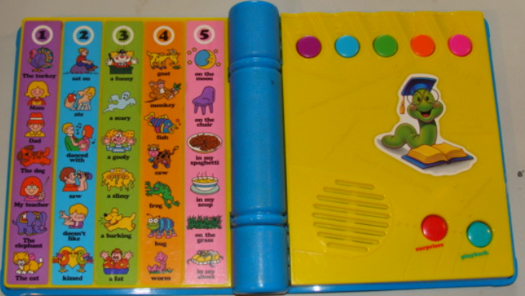

See N Story Maker

Instructions to use the game
- Click buttons to see different actions.
- The purple button selects any button from list of first column.
- The sky blue button selects any button from list of second column.
- The green button selects any button from list of third column.
- The orange button selects any button from list of fourth column.
- The pink button selects any button from list of five column.
- The red button selects the reset function and resets the String.
- The sky blue button, adjacent to red button which will surprizingly say a sentence.
- To view whats going on background please see the console.